Chapter 1. Fairy in Immortal Isle 1. Fishing Village(Yuhang County) [Story]In the morning, Xiaoyao is woken up by Auntie Li. Some customers come to stay, and Xiaoyao needs to help. [Item]The room contains: Styptic, Sabot, Pure Seal, Hat.
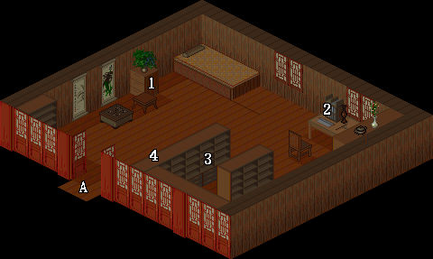 | 1.Styptic 2.Sabot 3.Pure Seal 4.Hat A.Inn Hall |
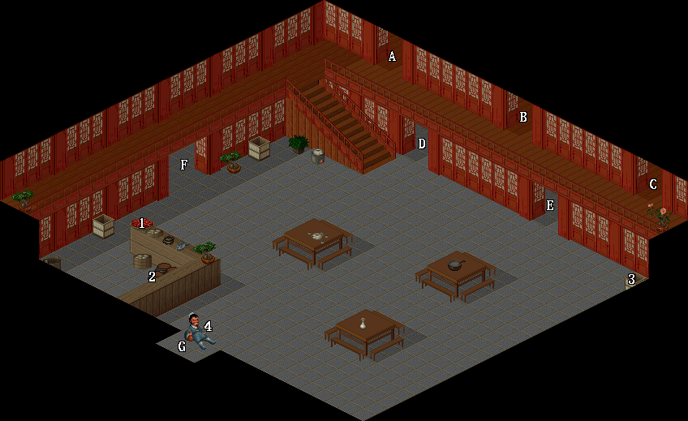 | 1.Fruit 2.StickyCake 3.Soul Revive 4.Drunken Taoist A.Guest Room A B.Guest Room B C.Xiaoyao's Room D.Aunt's Room E.Firewood Shed F.Kitchen G.Fishing Village |
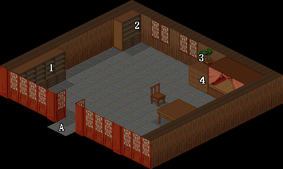 | 1.RestorPill 2.Demon Chaser 3.S Flower 4.50G A.Inn Hall |
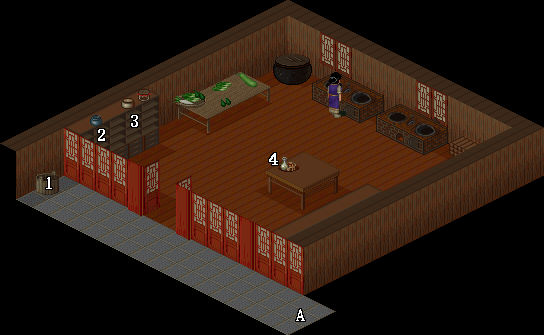 | 1.Realgar 2.Cured Meat 3.Garlic 4.dish A.Inn Hall |
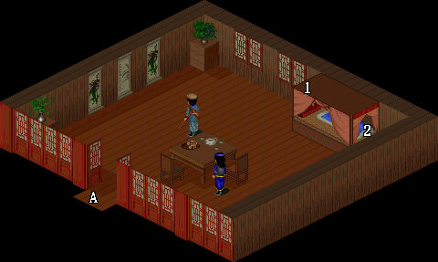 | 1.DarkMist 2.Plum Dart A.Inn Hall |
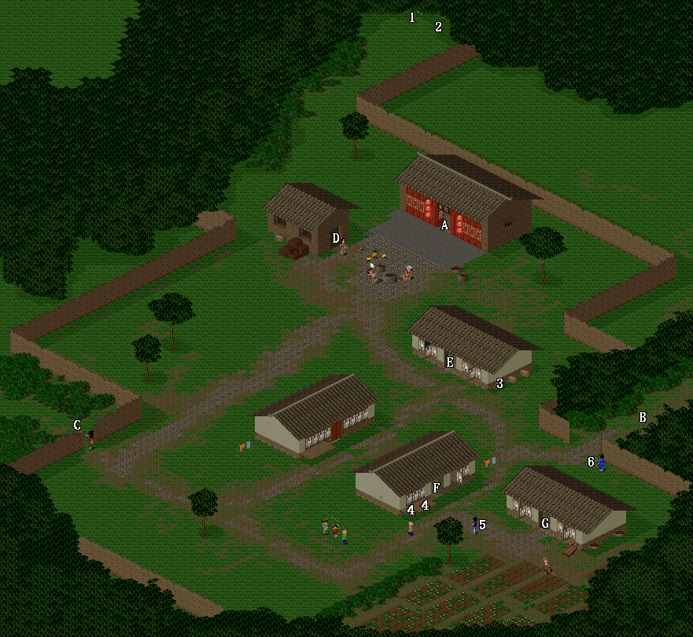 | 1.DragGrass 2.Styptic 3.Egg 4.Fruit 5.Xiulan 6.Xianglan A.XiaoyaoInn B.FerryMarket C.Shili Hills D.small Wooden cabin E.Wang Xiaohu's F.Doctor Hong Clinic G.Uncle Ding's House |
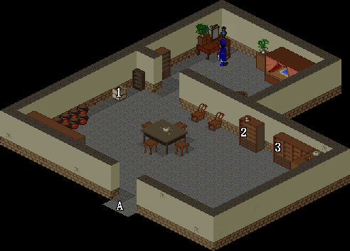 | 1.Salt 2.Pure Seal 3.5G A.Fishing Village |
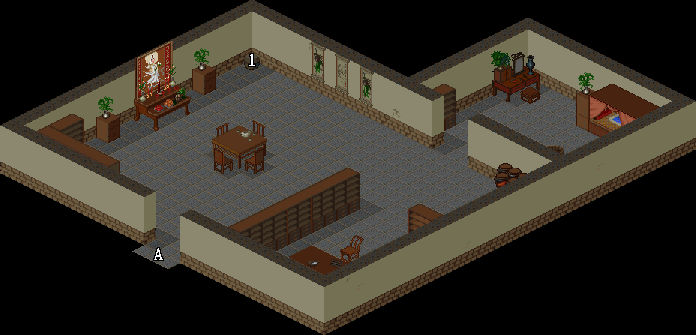 | 1.StickyRice A.Fishing Village |
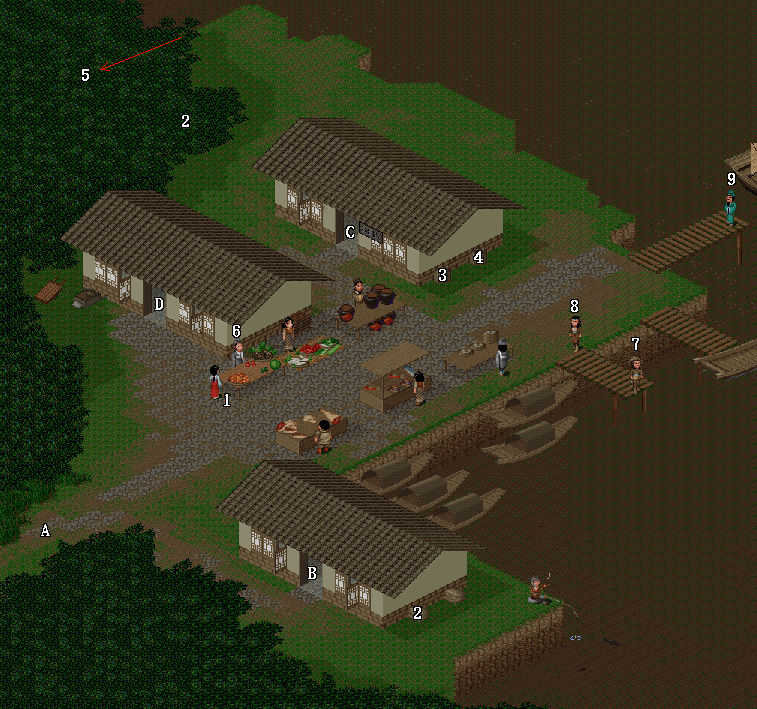 | 1.Fruit 2.Styptic 3.Beehive 4.Honey 5.Vine Armor 6.Fruit Vendor 7.Uncle Shui 8.Brother Zhang Si 9.Boss Fang A.Fishing Village B.Huangfu Ying House C.Zeng Blacksmith D. Carpenter Shop |
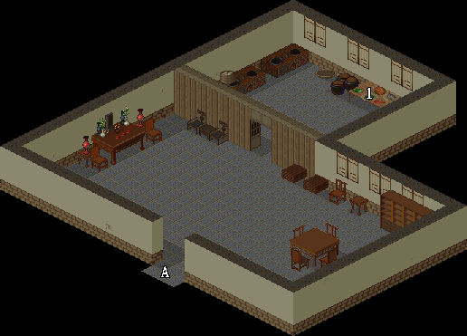 | 1.Roast Meat A.FerryMarket |
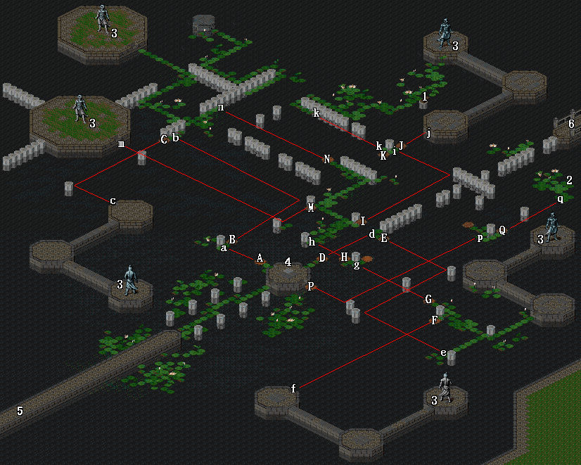 | 1. 5 seals 2.Snow Lotus 3.Statue 4.Padal 5.Stone Passage 6.Lotus Forest |
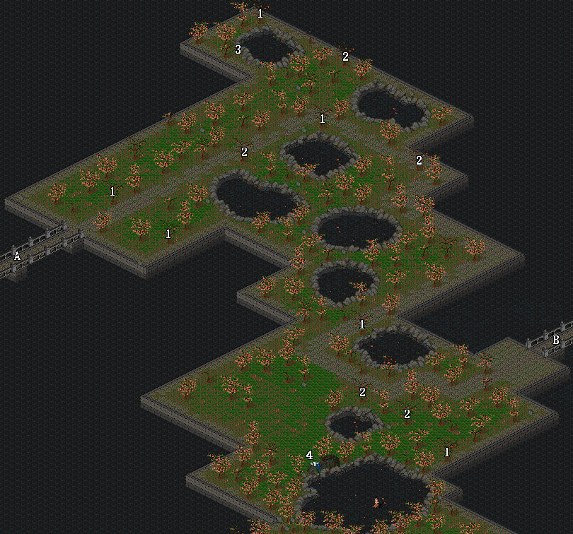 | 1.Fruit 2.MouseFruit 3.Styptic 4.Ling'er's Cloth A.Lotus Flower Pond B.Moon Palace Outside |
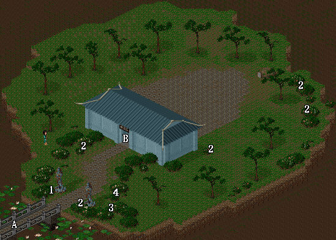 | 1.DragGrass 2.Styptic 3.Fruit 4.MouseFruit A.Lotus Flower Pond B.Moon Palace Outside |
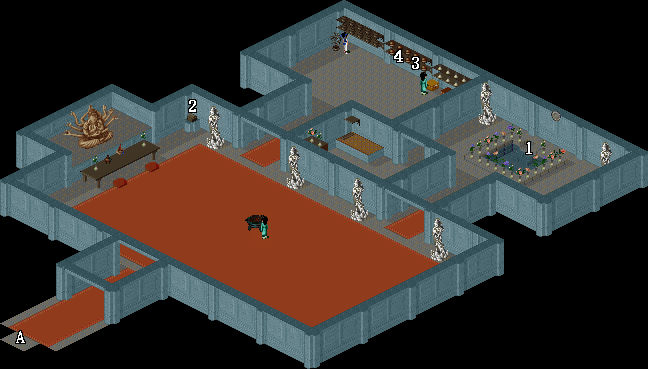 | 1.Spring Water 2.RemedSeal*3, MiaoKnife 3.March Pill 4.Salve A.Moon Palace Outside |
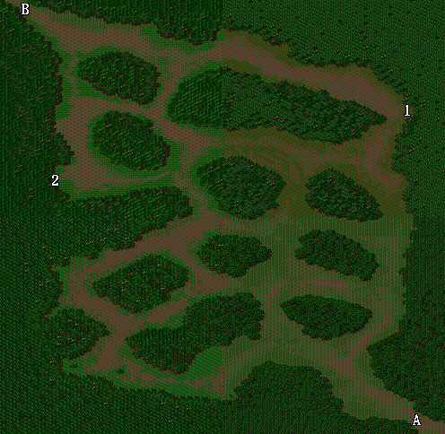 | 1.DragGrass 2.Styptic A.Fishing Village B.Temple of Mt outside |
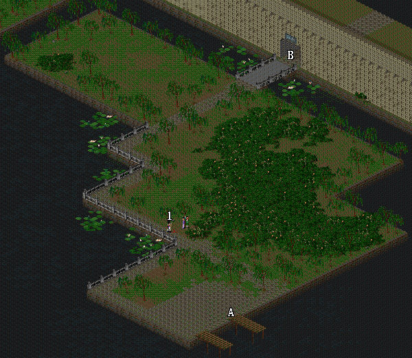 | 1.Yueru A.get off from boat B.Suzhou City |
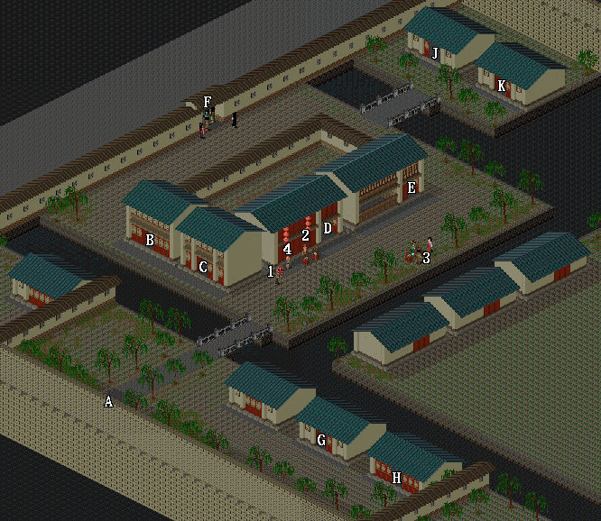 | 1.Sugar Ball Vendor 2.Food Vendor 3.General Store 4.Little Bean A.Suzhou City Exterior B.Clinic C.Pawn Shop D.Inn E.Weapon Shop F.Lin Fortress G.Residence 1 H.Residence 2 J.Residence 3 K.Residence 4 |
| Sugar Ball Vendor | Sugar Ball 20 |
| Food Vendor | Roast Meat 40, Wine 80, Tea Egg 40, Fruit 25, StickyCake 100 |
| General Store | Silver Hairpin 420, Hairpin 60, Jade Pin 1800, Embroidered Shoes 450, Silver Needle 500, Bronze Mirror 800, Jade Bracelet 950, Sachet 10 |
| Clinic | Realgar 50, Styptic 50, March Pill 120, Salve 280, RestorPill 200, Soul Revive 550 |
| Weapon Shop | Vine Armor 400, Chainmail Robe 1230, Warrior Cape 900, Long Sword 1500, Cleaver 900, MaidenSwd 1000, FR Knife 1300, Iron Shoes 1100, Iron Bracer 360 |
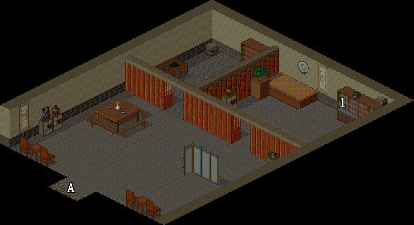 | 1.Pure Seal A.Suzhou City |
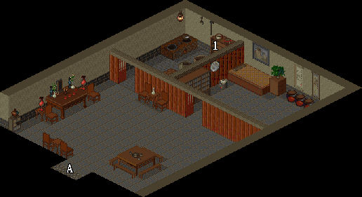 | 1.Cured Meat A.Suzhou City |
| 1.Pearl A.Suzhou City |
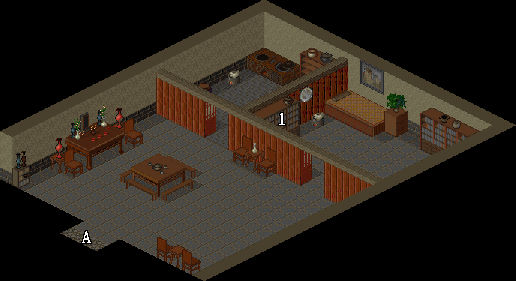 | 1.DarkMist A.Suzhou City |
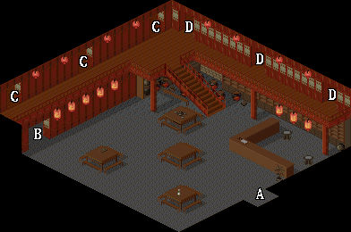 |
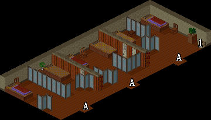 | 1.8ImmStone A.Inn Hall |
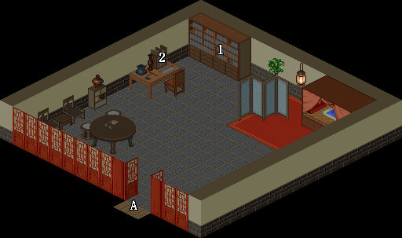 | 1.Sachet 2.50G A.Lin Fortress Courtyard |
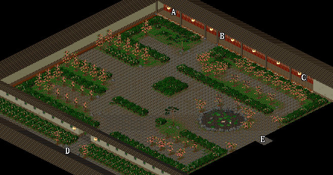 | A.East Wing 1 B.East Wing 2 C.East Wing 3 D.West Wing E.Lin Fortress Hall |
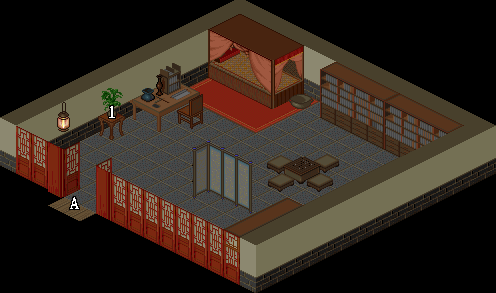 | 1.Styptic A.Lin Fortress Courtyard |
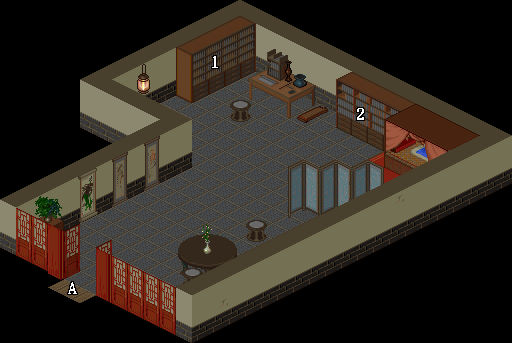 | 1.IronSeal 2.Sabot A.Lin Fortress Courtyard |
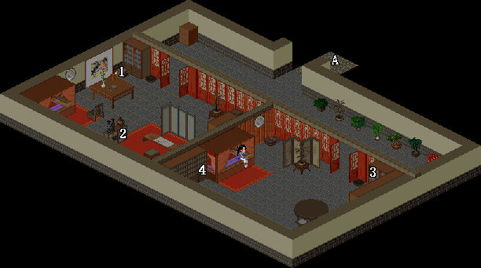 | 1.Embroidered Shoes 2.Jade Bracelet 3.15G 4.Silver Needle A.Lin Fortress Courtyard |
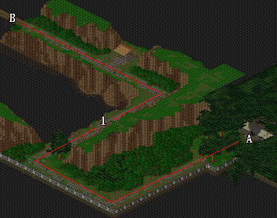 | 1.Yueru A.Broken Wall (cannot go back) B.Hidden Dragon Cave Entrance |
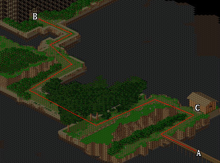 | A.Lin Fortress Courtyard Outskirts B.Hidden Dragon Cave 1F C.Hidden Dragon Cave Entrance Wooden House |
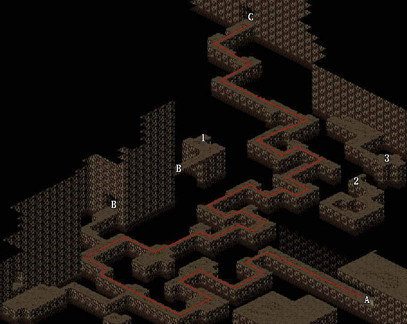 |
1.RestorPill 2.Styptic (unobtainable) 3.Realgar (unobtainable) A.Hidden Dragon Cave Front B.Hidden Dragon Cave Short Passage C.Hidden Dragon Cave Passage |
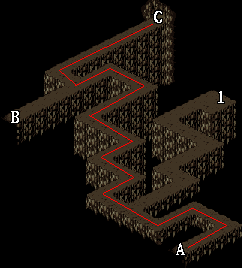 |
1.Silver Needle A.Hidden Dragon Cave 1F B.Dead-End Passage C.Hidden Dragon Cave 2F |
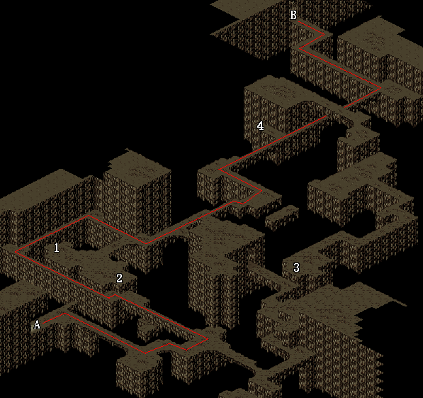 |
1.Realgar 2.RestorPill 3.Vine Armor (unobtainable) 4.S Flower A.Hidden Dragon Cave Passage B.To Hidden Dragon Cave 3F Lower |
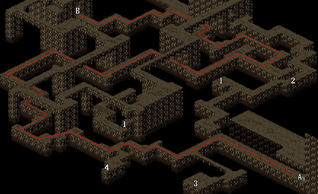 |
1.Realgar (unobtainable) 2.Styptic (unobtainable) 3.Silver Needle 4.S Flower A.To Hidden Dragon Cave 2F B.To Hidden Dragon Cave 3F Upper |
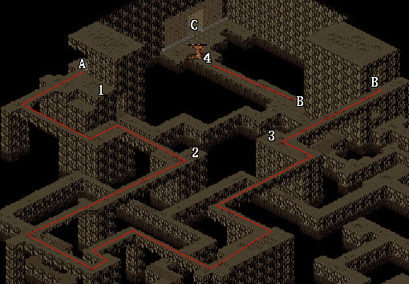 |
1.300G 2.Silver Needle 3.Realgar 4.Male Snake Demon (Half-Serpent) A.To Hidden Dragon Cave 3F Lower B.Short Passage C.Hidden Dragon Cave Interior |
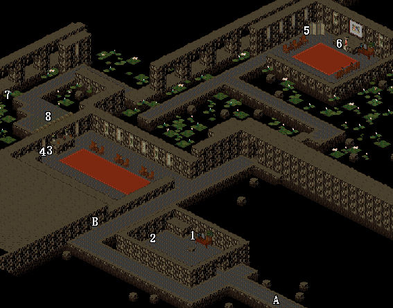 |
1.Silver Hairpin 2.Bronze Mirror 3.Pearl 4.Jade Bracelet 5.Iron Shoes 6.Fox Lady (Fox Spirit) 7.Stealth Gu 8.From left to right: Silk King, Meng Po's Soup, Wine, 600G, 500G, 400G, 300G, 200G, 100G A.Hidden Dragon Cave 3F Upper B.Stone Door |
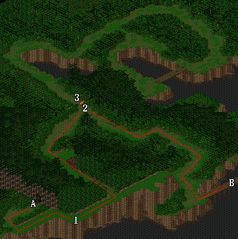 | 1.MouseFruit 2.Beast Trap (only appears after meeting Doctor Han) 3.Wild Deer A.Hidden Dragon Cave (can't go back) B.Baihe Village |
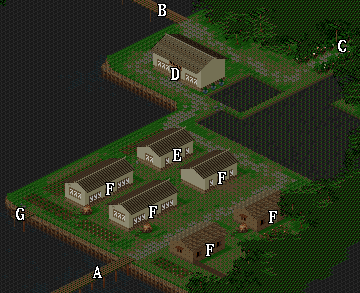 | A.Baihe Village South Outskirts B.Baihe Village North Outskirts C.Village Chief's Courtyard D.Luo Rice Shop E.Fisherman's House F.Residence G.Fishing Spot |
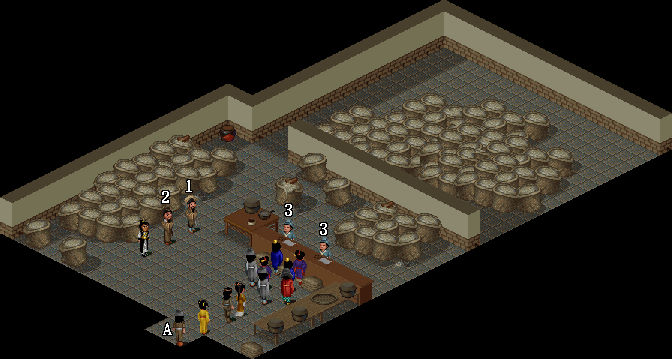 | 1.Pawn Shop 2.Boss Luo 3.Assistant A.Baihe Village |
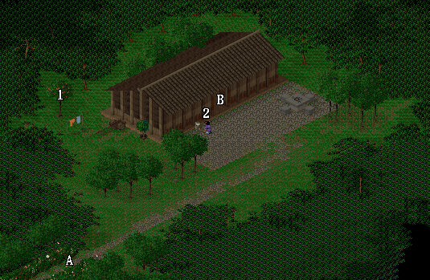 | 1.Ginkgo Nut 2.Med Brewer Abao A.Baihe Village B.Village Chief's House |
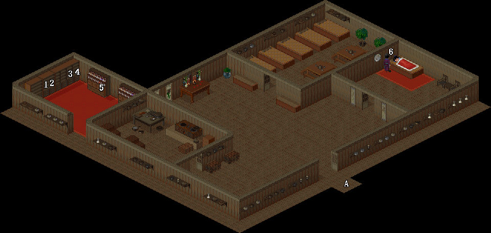 | 1.God's Tea 2.9sec Calamus 3.Life Dew 4.9-Yin Powder 5.Trial Fruit 6.Doctor Han A.Village Chief's Courtyard |
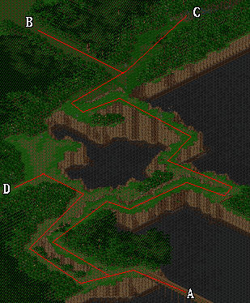 | A.Baihe Village B.Jade Buddha Temple C.Heishui Town D.Guiyin Mountain |
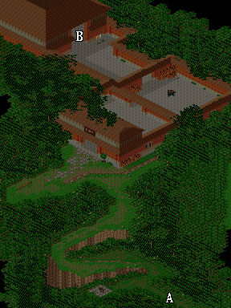 | A.Baihe Village West Outskirts B.Jade Buddha Temple Interior |
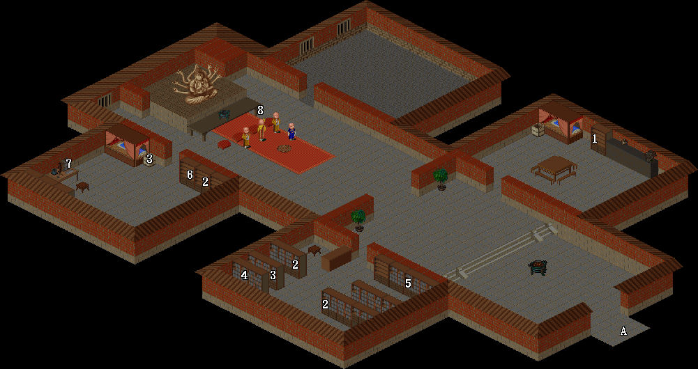 | 1.Pure Seal 2.Rosary*3 3.Sandal*2 4.Demon Chaser 5.5G 6.RemedSeal 7.15G 8.Master Zhixiu A.Jade Buddha Temple |
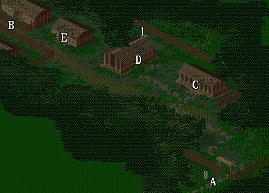 | 1.MazeBee A.Baihe Village West Outskirts B.Heishui Town West Outskirts C.Residence 1 D.Residence 2 E.Residence 3 |
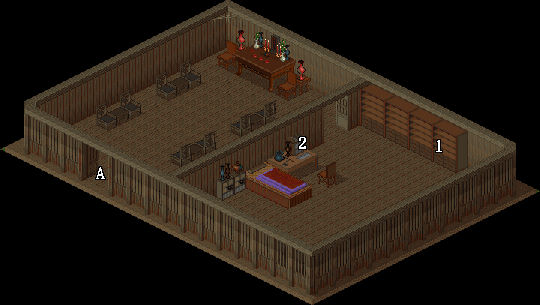 | 1.Garlic 2.Robe A.Heishui Town |
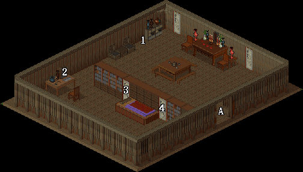 | 1.StickyRice 2.RealgarWine 3.100G 4.Garlic A.Heishui Town |
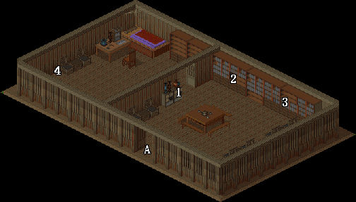 | 1.Garlic 2.Pearl 3.50G 4.Pure Seal A.Heishui Town |
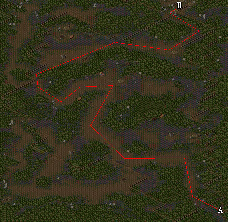 | A.Heishui Town B.Mass Grave |
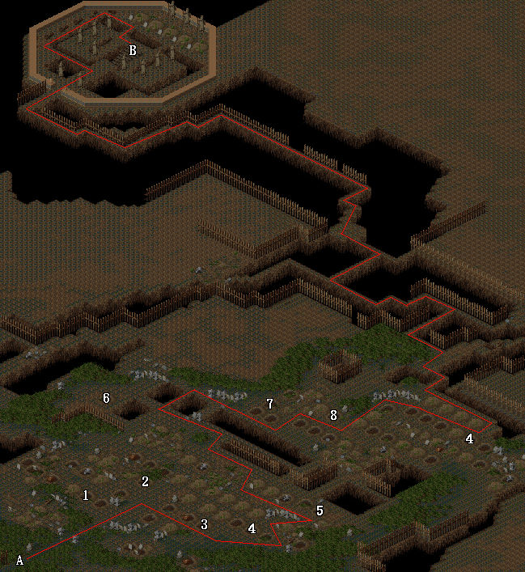 | 1.600G 2.Pure Seal 3.Soul Revive 4.Styptic 5.DarkMist 6.MazeBee 7.TaoSeal 8.RestorPill A.Heishui Town West Outskirts B.General Tomb |
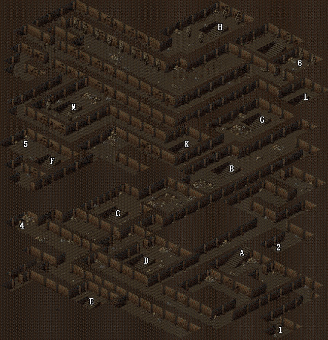 | 1.Plum Dart 2.Salve 3.100G 4.Honey 5.1000G 6.Iron Shoes A.Mass Grave B~M.General Tomb Lower Floor (same-letter stairs) |
| 1.March Pill 2.Iron Bracer 3.Bronze Mirror 4.Plum Dart 5.Salve 6.800G 7.Pauldron 8.Cane 9.BoneNail 10.RestorPill 11.Cleaver 12.Styptic 13.Jiangshi King B~M.General Tomb Upper Floor (same-letter stairs) |
| 1.Soul Revive 2.RemedSeal 3.Pure Seal 4.BoneNail 5.Soul Lamp 6.RestorPill 7.Puppet Worm x2 8.EarthSeal 9.Red Ghost King A.Fall Point |
| A.Baihe Village West Outskirts B.Guiyin Caves |
| A.Guiyin Mountain Bottom B.Guiyin Path |
| A.Guiyin Caves B.Guiyin Caves B C.Guiyin Caves C D.Guiyin Caves D E.Guiyin Caves E F.Guiyin Caves F G.Guiyin Altar Outside |
| 1.Salve 2.Red Scorpion Powder 3.Styptic 4.Knock-Out A.Guiyin Path |
| 1.Sleeve Sword 2.Knock-Out A.Guiyin Path (Base) B.Guiyin Path (Peak) |
| 1.Star Trap 2.March Pill A.Guiyin Path (Base) B.Guiyin Path (Peak) |
| 1.Red Scorpion Powder A.Guiyin Path (Base) B.Guiyin Path (Peak) |
| 1.Knock-Out A.Guiyin Path (Base) B.Guiyin Path (Peak) |
| 1.Styptic 2.MouseFruit A.Guiyin Path B.Guiyin Altar A C.Guiyin Altar B |
| 1.War Cape 2.IronCloth 3.Salve 4.MonkKnife 5.RestorPill 6.Plum Dart 7.Star Trap 8.Red Scorpion Powder A.Guiyin Altar Outside B B.Guiyin Altar Outside C C.Guiyin Altar Prison |
| 1.Han Mengci A.Guiyin Altar B.To Guiyin Altar East Outskirts |
| 1.Styptic 2.MouseFruit A.To Guiyin Altar Prison B.Yangzhou City Southern Outskirts |
| A.Guiyin Altar Eastern Outskirts B.Yangzhou City (South) |
| 1.Wine Shop Girl 2.Pawn Shop A.Yangzhou City Southern Outskirts B.Yangzhou City (North) A C.Yangzhou City (North) B D.Residence E.Weapon Shop F.General Store G.Inn Main Hall H.Inn West Kitchen K.Inn East Kitchen |
| 1.Sticky Cake 2.Cured Meat A.Yangzhou City (South) B.Inn Main Hall |
| A.Yangzhou City (South) B.East Kitchen C.West Kitchen D.City Wall South Section E.Guest Room 1 F.Guest Room 2 G.Guest Room 3 |
| A.Inn Main Hall B.To City Wall Mid Section A C.To City Wall Mid Section B D.To Yangzhou City (North) D |
| A.To City Wall South Section B B.To City Wall South Section C |
| 1.Lady Thief 2.Prison Guard A.Yangzhou City (South) B B.Yangzhou City (South) C C.Yangzhou City Northern Outskirts D.To City Wall South Section D E.Ji Sanniang's House F.Residence G.Well H.Government Office K.Prison L.Abandoned House |
| 1.Garlic A.Yangzhou City (North) |
| A.Well Entry Point (cannot climb back up) B.Treasure Room |
| 1.Jade Dew 2.Soul Lamp 3.Wind Shoes 4.Stealth Gu 5.RainbRobe 6.Cassock 7.Jade Paste (fake) 8.5000G 9.Sleeve Sword x5 10.Knock-Out 11.Shadow Needle 12.Purple Gold Gourd A.Well Bottom B.Drop point from Ji Sanniang's House screen secret door |
| A.Yangzhou City (North) B.Yangzhou Farmhouse A C.Yangzhou Farmhouse B D.Toad Mountain Base |
| A.Yangzhou City Northern Outskirts B B.Yangzhou City Northern Outskirts C |
| 1.Styptic x2 2.Ice Gu 3.Scholar 4.Sword Saint A.Yangzhou City Northern Outskirts B.Toad Mountain Path |
| 1.DragGrass 2.DarkMist 3.Apricot 4.Yao-Eating Worm 5.S Flower 6.Toad Egg x9 7.Cane 8.Opium 9.Corpse Acid 10.MazeBee 11.Antique Dealer Corpse 12.Woman A.Toad Mountain Base B.Toad Cave |
| 1.Meng Po's Soup 2.Illusion Gu 3.Puppet Worm 4.Jade Blood Worm 5.9-Yin Powder 6.Stealth Gu 7.Queen of Toads A.Toad Mountain Path B.Toad Cave Rear Cave |
| 1.Opium 2.Gu x9 3.Toad Egg x9 4.Yao-Eating Worm 5.JadeSilk 6.Snow Toad 7.Puppet Worm 8.Spirit Gu A.Toad Cave B B.Toad Mountain Cave C C.Rear of Toad Mountain |
| A.Toad Cave Rear Cave B.Farmland C.Mountain Inn |
| A.Rear of Toad Mountain B.Water Fairy Temple |
| 1.Vendor 2.Boatman A.Farmland |
| 1.Guard Ahui 2.Guard Ade A.Capital City B.Ministry Main Hall C.Ministry Lotus Pond |
| 1.Embroidered Shoes 2.Maid Axiang A.Ministry Front Courtyard B.Ministry Central Courtyard C.Dining Hall D.Main Hall Second Floor |
| 1.Talisman 2.3000G 3.Sandalwood, Candle A.Main Hall First Floor |
| A.Ministry Central Courtyard B.Ministry Back Garden |
| 1.Jade Dew A.Ministry Lotus Pond B.Ministry Rear Courtyard Clearing C.Liu Jinyuan's New Room |
| A.Ministry Back Garden B.Liu Jinyuan's Bedroom C.Flower Room |
| 1.Beggar A 2.Beggar B 3.Pawn Shop 4.Medicine Shop 5.Grocery Store 6.Drunken Sword Master A.Ministry B.Antique Dealer's House C.Tavern D.Weapon Shop E.Yihong Court F.Residence G.Noble Consort Fragrant Bath |
| 1.Silver Needle 2.Madam Song A.Capital City |
| 1.Tavern Owner 2.Fortuneteller A.Capital City B.Tavern Second Floor |
| 1.Maoshan Priest A.Tavern First Floor |
| A.Capital City B.Yihong Court Second Floor |
| 1.Madam 2.Tea Girl A.Yihong Court First Floor B.Xiaoxue's Room C.Madame Yingying's Room D.Xiaolian'er's Room |
| A.Ministry Back Garden B.Black Spider Forest |
| 1.Cane 2.TrialFruit 3.DragGrass 4.S Flower 5.SpiderEgg x9 6.DarkMist 7.TH Scent 8.Soul Web 9.Beehive 10.SpiderEgg x9 11.Styptic 12.9sec Calamus 13.Spirit Iris 14.Black Spider A.Ministry Rear Courtyard Clearing B.Toxic Lady's Residence |
| 1.Toxic Lady A.Black Spider Forest |
| 1.Solitary Sword Saint A.Shu Sect Front Courtyard B.Shu Sect Rear Courtyard C.Pill Room D.Shu Sect Room |
| 1.RecSeal 2.IronSeal 3.9-Yin Powder 4.Spirit Gourd Pill 5.Snow Lotus 6.Life Dew 7.Jade Paste 8.Jade Bead A.Shu Sect Main Hall |
| A.Shu Sect Rear Courtyard B.Mount Shu Back Mountain East Side |
| A.Mount Shu Back Mountain West Side B.Outside Demon Tower |
| A.Mount Shu Back Mountain East Side B.Teleport to Demon Tower 9F |
| 1.Sarira 2.Thun.Seal 3.RemedSeal 4.FireSeal 5.EarthSeal 6.Soul Revive 7.WindSeal 8.TrialFruit 9.TaoSeal 10.Salve 11.Apricot 12.WaterSeal 13.IronSeal A.From 9F B.Teleport to 7F |
| 1.DragGrass 2.RecSeal 3.Salve 4.RemedSeal 5.Nuwa Stone 6.Apricot 7.Jade Paste (fake) 8.Soul Lamp 9.Soul Revive 10.Flat Peach A.From 8F B.Teleport to 6F |
| 1.Honey 2.Meng Po's Soup 3.DarkMist 4.Spirit Gourd Pill 5.Sword Geezer A.From 7F B.Teleport to 5F |
| 1.Bodhi 2.DevilTwine 3.Demon Chaser 4.SpikeArmor 5.Sleeve Sword 6.Bagua Mirror 7.DragGrass 8.IronSeal A.From 6F B.Teleport to 4F |
| 1.9sec Calamus 2.TS Hat 3.Sarira 4.Spirit Iris 5.SoulSeal 6.Wine Jar (Tian Gui Huang) A.From 5F B.3F |
| 1.S Flower 2.Flat Peach 3.FM Knife 4.DarkMist 5.Spirit Gourd Pill 6.Meditating Ghost 7.Heavenly Book (Book Immortal) A.4F B.Teleport to 2F |
| 1.Soul Lamp 2.RemedSeal 3.Puppet Worm 4.Jade Paste (fake) 5.TrialFruit 6.Bagua Mirror 7.Flat Peach 8.RecSeal 9.9sec Calamus 10.Corpse Acid (cannot pick up) A.From 3F B.Teleport to 1F |
| 1.DDragonSwd 2.Meng Po's Soup 3.TrialFruit A.From 2F B.Sword Pillar Room |
| 1.Ling'er A.1F B.Seven-Star Dragon Pillar |
| 1.Wind God Dragon 2.Earth God Dragon 3.Poison God Dragon 4.Thunder God Dragon 5.Ice God Dragon 6.Gold God Dragon 7.Fire God Dragon A.Down from Sword Pillar Room (cannot return) |
| 1.Shadow Poison 2.Jade Blood Worm x7, Gu Vessel (in two batches) 3.Silk King 4.Gu Vessel 5.9-Yin Powder 6.Heartbreak Grass x3 7.Dragon Poison Sand x3 A.Outside Saint Lady Home |
| 1.Gu x9 2.SeaBlood 3.TrialFruit x2 4.MouseFruit (unlimited) 5.S Flower x2 6.Banana x2 7.9sec Calamus 8.DragGrass 9.TH Scent 10.Opium 11.Spirit Iris 12.Cane A.Saint Lady Home B.Spirit Mountain Foot East Side |
| 1.DragGrass 2.Flat Peach 3.Spirit Iris 4.S Flower 5.TH Scent 6.9sec Calamus A.Outside Saint Lady Home B.Sacred Forest East Side C.Peach Forest D.Spirit Mountain Summit E.Wood Taoist Tree Cave Exit |
| 1.Bodhi 2.Spirit Iris 3.DragGrass 4.Apricot 5.TrialFruit 6.Little Monkey 7.Spirit Iris (cannot pick up) A.Spirit Mountain Foot East Side B.Sacred Forest West Side C~a.Tree Cave Corresponding Points |
| 1.Gold-Winged Phoenix A.Sacred Forest East Side B~a.Tree Cave Corresponding Points |
| 1.DragGrass 2.Spirit Iris A.Li Xiaoyao's Falling Place B.Wood Taoist Tree Cave |
| 1.Demon Chaser 2.Gu Vessel 3.Puppet Worm 4.Spirit Gourd Pill 5.Shadow Needle 6.DevilTwine 7.BloodBall 8.MazeBee 9.ZJ Crown, Qiankun Mirror 10.PL Sword, Silk King 11.MiaoKnife, 10000G x2, Pearl A.Spirit Mountain Foot West Side B.To Spirit Mountain Foot East Side |
| 1.Flat Peach 2.Gu x9 3.MouseFruit A.Spirit Mountain Foot East Side B.Peach Forest East Side Central |
| 1.Ice Gu 2.Nuwa Stone (cannot pick up) 3.BlastGu 4.Soul Lamp 5.Fire Gu 6.MazeBee 7.Silver Needle 8.Puppet Worm A.Peach Forest East Side South B.Peach Forest East Side North |
| 1.Nuwa Stone A.Central East Peach Forest B.Peach Spring Village |
| 1.Peach 2.ATAO A.Northeast Peach Forest B.West Peach Forest C.Dwelling 1 D.Dwelling 2 E.Dwelling 3 F.Dwelling 4 G.Dwelling 5 |
| 1.Wine 2.Snow Lotus 3.Soul Lamp 4.Jade Bracelet 5.DragGrass 6.Salve A.Peach Spring Village |
| 1.RubyWine 2.Honey 3.Spirit Gourd Pill 4.Tea Egg A.Peach Spring Village |
| 1.Wine 2.Opium A.Peach Spring Village |
| 1.Jade Dew 2.Salve 3.Soul Revive 4.Bronze Mirror A.Peach Spring Village |
| 1.God's Tea 2.TH Scent A.Peach Spring Village |
| 1.Puppet Worm (right-side one cannot pick up) 2.Honey (cannot pick up) 3.God's Tea 4.Nuwa Stone 5.Spirit Gu 6.Song Hewen A.Peach Spring Village B.West Peach Forest End |
| 1.TrialFruit 2.Heartbreak Grass A.East Side of Spirit Mountain Base B.Outside Dali City |
| A.Spirit Mountain Summit B.Dali City C.Dali City Outskirts |
| 1.Passerby 2.Guard A.Outside Dali City B.White Miao Council Hall C.Fire Qilin Cave D.To Nuwa God Temple E.Dali Han District F.White Miao Weapon Shop G.White Miao General Store H.White Miao Dwelling 1 J.White Miao Dwelling 2 K.White Miao Dwelling 3 L.White Miao Dwelling 4 M.White Miao Dwelling 5 N.White Miao Dwelling 6 |
| 1.Knock-Out 2.Snow Lotus 3.Soul Revive 4.Honey 5.Shopkeeper A.Dali City |
| 1.Wine 2.Fire Gu 3.Salt 4.Silk Robe 5.Egg A.Dali City |
| 1.Salt 2.Pearl 3.Ice Gu 4.Bracer 5.Gu 6.Cape 7.Fire Gu A.Dali City |
| 1.Opium A.Dali City |
| 1.Honey 2.Fire Gu 3.Fruit 4.Illusion Gu 5.Egg A.Dali City |
| 1.Ice Gu 2.50G 3.Salve 4.March Pill A.Dali City |
| 1.230G 2.Jade Bracelet 3.Beehive 4.Salt A.Dali City |
| A.Dali City B.Han Pawn Shop C.Han Weapon Shop D.Han Medicine Shop E.Han Dwelling 1 F.Han Dwelling 2 |
| 1.VineArmor 2.300G 3.Spirit Gourd Pill 4.Honey A.Dali Han District |
| A.Dali City B.Fire Qilin Cave Rear Section |
| 1.Fire-Eyed Qilin A.Fire Qilin Cave Front Section |
| 1.Nuwa Statue A.Nuwa God Temple Entrance B.Temple Altar |
| A.Outside Nanzhao Palace B.Main Hall C.To Underground Palace D.Left Side Hall E.Right Side Hall |
| A.Palace Outer Hall B.Dungeon |
| 1.Shaman Queen A.Main Hall |
| A.To Palace Outer Hall B.Underground Palace Lower Floor Entrance C.Underground Palace Upper Floor Room |
| A.Underground Palace Upper Floor Entrance B.Underground Palace Lower Floor Passage C.Monster Cultivation Chamber |
| 1.RecSeal 2.Nuwa Stone 3.CloudShoes A.Underground Palace Lower Floor Entrance |
| 1.2000G 2.1000G 3.3000G 4.700G 5.900G 6.5000G 7.Elder Shi A.Underground Palace Lower Floor Entrance B.Underground Palace Altar |
| 1.Puppet Worm 2.Nuwa Stone A.Underground Palace Lower Floor Passage B.Underground Palace Treasure Chamber |
| 1.SkyStaff A.Underground Palace Altar |
| 1.8ImmStone 2.Bodhi 3.Sarira 4.Silk King 5.Nuwa Stone A.Dungeon Entry Point B.Underwater Maze Rear Section |
| 1.Snow Toad 2.Silk King 3.Nuwa Stone 4.Apricot 5.8ImmStone 6.TrialFruit 7.Puppet Worm A.Underwater Maze Front Section B.Underwater Maze End |
| 1.Xiulan 2.Chest A.Shili Hills B.Temple of Mt |
| A.Outside Dali City B.Outside Trial Grotto |
| 1.Gai Luojiao A.Dali City Outskirts B.Trial Grotto Floor 1A C.Trial Grotto Floor 1B D.Trial Grotto Floor 1C |
| A.Outside Trial Grotto B B.Outside Trial Grotto C C.Outside Trial Grotto D D~ G.Corresponding to next level lowercase letters |
| A~ B.Corresponding to previous level lowercase letters C~ G.Corresponding to next level lowercase letters |
| A~ B.Corresponding to previous level lowercase letters C~ E.Corresponding to next level lowercase letters |
| 1.Gu Vessel, SnakeEgg x9, ScorpEgg x9, Toad Egg x9 2.CentiEgg x9 3.SpiderEgg x9 4.Fire Gu 5.Ice Gu, Gu x9, S Flower, Corpse Acid 6.Dragon Poison Sand 7.Red Scorpion Powder 8.Gu x9, TH Scent, Yao-Eating Worm, Opium 9.Yao-Eating Worm 10.TH Scent, Meng Po's Soup, MazeBee, Jade Blood Worm 11.Opium, Yao-Eating Worm, MiaoKnife, Jade Blood Worm 12.Yao-Eating Worm, Meng Po's Soup, Dragon Poison Sand, S Flower 13.Soul Web 14.Meng Po's Soup 15.Knock-Out, Ice Gu 16.Fire Gu, Jade Blood Worm A~ B.Corresponding to previous level lowercase letters C.Trial Grotto Floor 5 |
| 1.MiaoKnife 2.Gu x9 3.Jade Blood Worm 4.GuiYaKnife 5.LeoBrace 6.Jade Blood Worm, Yao-Eating Worm x2, DevilTwine x2, Demon Chaser, Star Trap x2 7.Star Trap x2, Silk King, 9-Yin Powder, BloodSilk, Spirit Gu 8.PhoenixFea 9.SkullStaff A.Trial Grotto Floor 4 D~ E.Corresponding to next level lowercase letters F.To teleporter level |
| 1.Star Trap 2.DevilTwine, Illusion Gu, Opium, S Flower 3.Soul Web, Gu x18, Demon Chaser 4.BloodSilk 5.CentiEgg x9, SpiderEgg x9, Toad Egg x9 6.ScorpEgg x9, SnakeEgg x9, Corpse Acid 7.Knock-Out, MazeBee, TH Scent 8.Spirit Gu, Fire Gu, Ice Gu 9.9-Yin Powder x2, Red Scorpion Powder 10.Star Trap A.To previous level a C~ E.Corresponding to next level lowercase letters |
| 1.Dragon Poison Sand 2.SeaBlood x3, PeaCGall x2 3.Puppet Worm 4.Silk King, Illusion Gu, Demon Chaser x2, Puppet Worm x2 5.VenomDragon Gall, GoldSilkGu x2, Shadow Poison x2, Stealth Gu 6.Soul Web, Ice Gu x2, Fire Gu x2 7.3CorpseGu x3, CraneRed x3, PeaCGall A~ B.Corresponding to previous level lowercase letters C.To Floor 5 b D.To next level d E~ F.Teleport to same letter |
| A.Return to previous level a |
| 1.Shadow Poison 2.Puppet Worm 3.BlastGu 4.Silk King 5.GoldSilkGu A.Floor 5 drop point B~ K.Teleport to same letter a~j.Teleport to next level lowercase letters |
| 1.Puppet Worm 2.Silk King 3.Nuwa Stone 4.Snow Toad 5.VenomDragon Gall 6.Silk Belt 7.BloodSilk 8.Silk Cloth 9.Stealth Gu (cannot pick up) A~ J.Teleport to previous level lowercase letters K.Teleport to previous level c L.Teleport to previous level d a~h.Teleport to same letter i.Teleport to bottom level |
| 1.ReedFloat 2.PhantBoots 3.XM Knife 4.SnakeStaff 5.DustlSword 6.GoldenBead 7.Five Spirit Statues A.From Teleporter Floor Lower |
| 1.G-Shaped Stele 2.FirePearl 3.Thun.Pearl 4.WaterPearl 5.WindPearl 6.Earth Pearl A.Nuwa God Temple |
| 1.TigerArmor 2.Phoe. Cape 3.SkullStaff 4.VenomDragon Gall A.Nuwa God Temple entrance (cannot return) B.Bottomless Abyss Middle Section |
| 1.Phoe. Robe 2.Jade Paste (fake) 3.Spirit Gu 4.Flat Peach 5.Drag Cape 6.WY Knife 7.Snow Lotus 8.Spirit Gourd Pill 9.Spirit Iris 10.RecSeal A.Bottomless Abyss Front Section B.Bottomless Abyss Rear Section |
| 1.IronSeal 2.BattleRobe 3.God's Tea 4.Wine A.Bottomless Abyss Middle Section B.Underground Palace Altar |
| 1.BlastGu 2.VenomDragon Gall 3.9-Yin Powder 4.Ice Gu 5.Fire Gu A.Bottomless Abyss Rear Section B.Underground Palace Lower Floor Passage C.Underground Palace Treasure Chamber |
| 1.Taiji Sword 2.SnakeStaff 3.Drag Plate A.Underground Palace Altar |
| 1.Yao-Eating Worm 2.Gu x9 3.Stealth Gu 4.Jade Blood Worm 5.PeaCGall 6.CraneRed 7.3CorpseGu (Illusion Gu in same spot, cannot pick up) 8.Shadow Poison 9.GoldSilkGu 10.SeaBlood 11.Heartbreak Grass A.Underground Palace Altar B.Underground Palace Lower Floor Entrance |
| 1.Life Dew A.Underground Palace Lower Floor Passage B.Underground Palace Upper Floor Entrance C.Beast Cultivation Chamber |
| 1.Snow Lotus 2.Soul Lamp 3.Soul Revive 4.Jade Dew 5.DragGrass 6.TowerCrown A.Underground Palace Upper Floor Entrance |
| A.Underground Palace Lower Floor Entrance B.To Nanzhao Palace Outer Hall C.Underground Palace Upper Floor Room |
| 1.Puppet Worm 2.Honey 3.Spirit Gourd Pill 4.Silk King (unreachable) 5.Meng Po's Soup (unreachable) A.Underground Palace Upper Floor Entrance B.Underground Palace Upper Floor Entrance (no area to enter) |
| A.To Underground Palace B.Main Hall C.Left Side Hall D.Right Side Hall E.Outside Nanzhao Palace |
| 1.Shaman King A.Palace Outer Hall B.Dungeon |